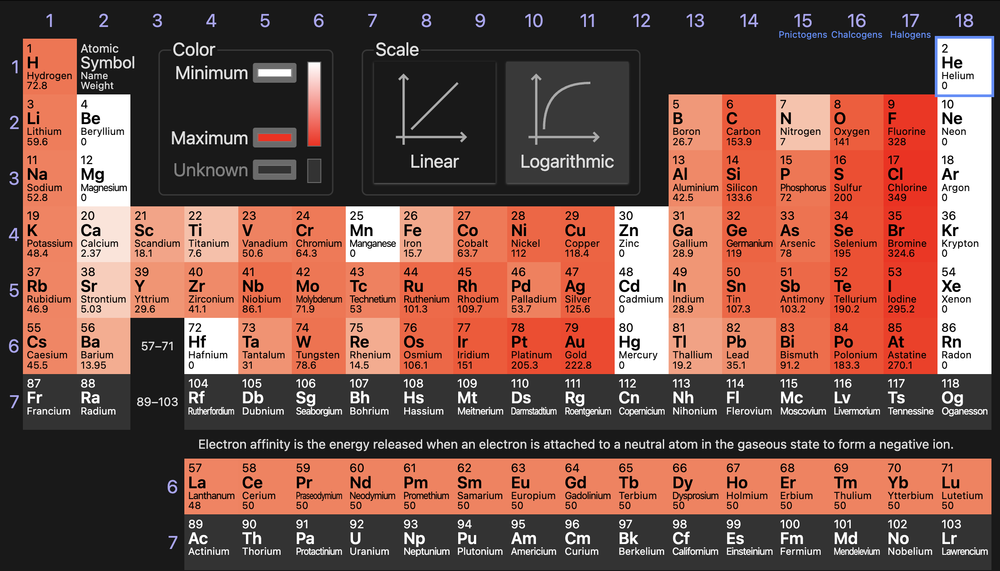

Periodic Trends

- The energy change from when an atom gains an electron to form a negative ion
- Can be Exothermic or endothermic
- Metals
- Easier to lose than gain
- Usually endothermic, or slightly exothermic
- Nonmetals
- Easier to gain electrons
- Adding electrons is exothermic, affinity is negative because it releases energy
- Easier to gain electrons
- Metals